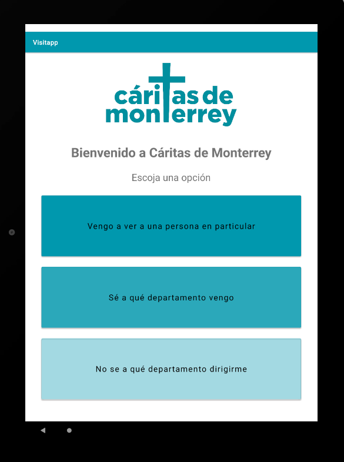

Visitapp
Automatiza el proceso de gestión de visitas en las instalaciones de Cáritas de Monterrey.
Desde la app los usuarios pueden:
- Seleccionar si visitan un departamento en específico
- Seleccionar si tienen una cita con un empleado en particular
- Seleccionar si no saben a dónde dirigirse
- Registrar su visita
En este sitio usted puede:
- Visualizar los datos almacenados
- Registrar nuevos trabajadores, departamentos y visitas
- Modificar datos de trabajadores, departamentos y visitas
- Eliminar trabajadores, departamentos y visitas
- Visualizar gráficas sobre las visitas
